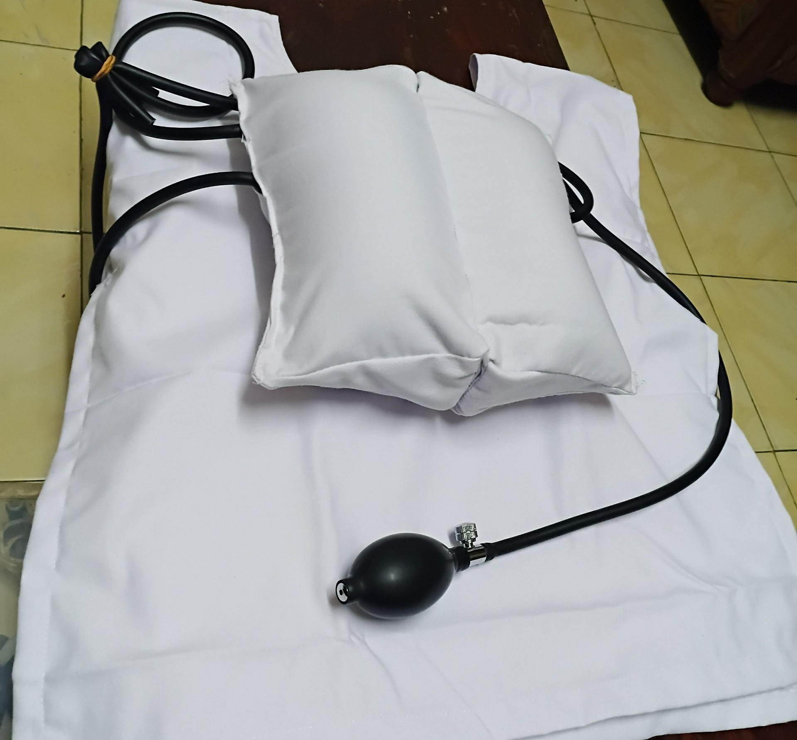

As part of the early prototype development phase of ResQ, we designed and stitched the first basic overlay jacket after researching suitable design options, materials, and required components. A BB bladder was selected and used as the pressure bag in this initial model to support the intended compression-based mechanism.
In parallel with the mechanical development, the sensors planned for the system were tested to verify their suitability for the prototype. The test results showed that the sensors were performing as expected, giving us confidence in the selected sensing approach and confirming that the current component choices are appropriate for the next development stage.
With the basic jacket structure completed and the sensor behavior validated, our next plan is to assemble all components together and develop a working basic prototype model for further testing, refinement, and integration.
